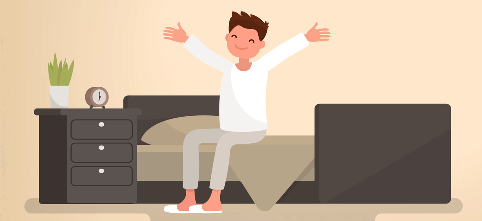

Be Healthy
If you are thinking how you can be healthy so don't worry,
I well tell you.
Wake up early
Here are some simple tips to help you get in the habit of waking up early:
Set an earlier bedtime. ...
Unplug before bed. ...
Avoid late-night snacking. ...
Avoid sugary energy drinks and coffee. ...
Silence your phone. ...
Avoid all-nighters. ...
Sleep with your curtains open. ...
Place your alarm clock across the room.

Morning exercise
Top 10 Benefits Of Doing Morning Exercises
1. Helps in weight loss
Early morning exercise before breakfast burns out your fat and calories at a very quick pace. This kick starts your weight loss endeavour and keeps you healthy.
2.Activate your body and brain
So that's common sense. Starting your day with a good workout session keeps you moving throughout the day. You'll become the zippy, chirpy bird running all around with an active brain and body. A morning workout helps you leave behind your sedentary lifestyle back home and starts fresh.
3.Helps in getting a better sleep
Exercise and sleep go hand in hand. Boosting up your metabolic rate with a few morning exercises creates a hormonal balance and serves you a good night's sleep. Get a tight sleep so that you can build a world of a dream for your life ahead.
4.Keep blood sugar under control
Physical exercise is crucial in the treatment of type 1 diabetes (T1DM). Working out, however, might be difficult for persons with T1DM. Hypoglycemia, or low blood glucose, is a danger of exercise. According to a 2015 research published in the Journal of Diabetes Science and Technology, morning exercise at home decreases that risk. 35 people with T1DM participated in the trial, which included morning and afternoon treadmill exercises. Exercising in the morning had a decreased incidence of hypoglycemia episodes following exertion than afternoon workouts.
5.Sleep better
An early workout might be exactly what you need to achieve a decent night's sleep. Adults received better sleep on days they exercised around 7 a.m., according to the 2014 study published in Vascular Health and Risk Management. Participants spent more time in deep sleep after the morning workout and had fewer midnight awakenings. Exercising outside first thing in the morning has significantly more sleep benefits. Early morning light exposure may help boost melatonin levels at night.
6.Lower your blood pressure
An early workout might be exactly what you need to achieve a decent night's sleep. Adults received better sleep on days they exercised around 7 a.m., according to the 2014 study published in Vascular Health and Risk Management. Participants spent more time in deep sleep after the morning workout and had fewer midnight awakenings. Exercising outside first thing in the morning has significantly more sleep benefits. Early morning light exposure may help boost melatonin levels at night.
7.Build muscles faster
An early workout might be exactly what you need to achieve a decent night's sleep. Adults received better sleep on days they exercised around 7 a.m., according to the 2014 study published in Vascular Health and Risk Management. Participants spent more time in deep sleep after the morning workout and had fewer midnight awakenings. Exercising outside first thing in the morning has significantly more sleep benefits. Early morning light exposure may help boost melatonin levels at night.
8.Fight off sickness
Diabetes is one of the advantages of morning exercise at home, especially before breakfast. Morning activities can aid with insulin resistance, which has been related to a lower risk of diabetes. Belgian researchers discovered that persons who exercised without consuming anything before or during the workout had better insulin sensitivity.
9.The healthy habits effect
In general, morning exercise at home helps to control your appetite by lowering the hunger hormone ghrelin. Satiety hormones such as peptide YY and glucagon-like peptide-1 are also increased. Working exercise in the morning, on the other hand, may help you regulate your hunger even more.35 women walked on a treadmill for 45 minutes in the morning in a 2012 research published in Medicine & Science in Sports & Exercise. The women's brain waves were then monitored as they watched photographs of flowers (the control) and food. The technique was repeated a week later, but this time without the morning exercise. According to the study, the women's brains responded to food photographs more strongly when they didn't exercise in the morning.
10.Improve Metabolism
In general, morning exercise at home helps to control your appetite by lowering the hunger hormone ghrelin. Satiety hormones such as peptide YY and glucagon-like peptide-1 are also increased. Working exercise in the morning, on the other hand, may help you regulate your hunger even more.35 women walked on a treadmill for 45 minutes in the morning in a 2012 research published in Medicine & Science in Sports & Exercise. The women's brain waves were then monitored as they watched photographs of flowers (the control) and food. The technique was repeated a week later, but this time without the morning exercise. According to the study, the women's brains responded to food photographs more strongly when they didn't exercise in the morning.